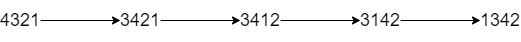

| Category | Difficulty | Likes | Dislikes |
|---|---|---|---|
| Algorithms | Hard | 499 | 28 |
You are given a string num representing the digits of a very large integer and an integer k. You are allowed to swap any two adjacent digits of the integer at most k times.
Return the minimum integer you can obtain also as a string.
Example 1:

Input: num = "4321", k = 4
Output: "1342"
Explanation: The steps to obtain the minimum integer from 4321 with 4 adjacent swaps are shown.Example 2:
Input: num = "100", k = 1
Output: "010"
Explanation: It's ok for the output to have leading zeros, but the input is guaranteed not to have any leading zeros.Example 3:
Input: num = "36789", k = 1000
Output: "36789"
Explanation: We can keep the number without any swaps.
Constraints:
1 <= num.length <= 3 * 104num consists of only digits and does not contain leading zeros.1 <= k <= 109